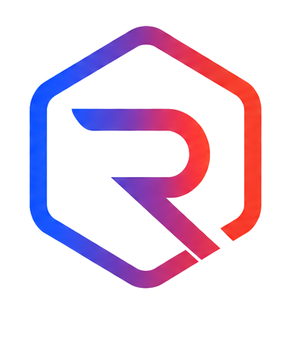

← royak.ioEffective 8 November 2026 · covers royak.io and demo.royak.io · Резюме на български
Royak is open source (MIT). The controller of personal data collected through royak.io and demo.royak.io is Evo Tech Development EOOD, UIC 204234209, 1A Petko Karavelov Blvd, Sofia, Bulgaria. Questions about your data: office@evotech.bg.
The sites have no forms and do not ask for your name or email. The demo's buttons (scale, kill a pod) act on the demo cluster only and store nothing about you.
| Name | Type | Purpose | Duration |
|---|---|---|---|
| royak-consent-v1 | Necessary (localStorage) | Remembers your cookie choice | Until you delete it |
| _ga, _ga_* | Analytics, only with consent | Google Analytics 4: tells visits apart with a random identifier | Up to 2 years; analytics data is kept for 14 months |
Without consent Google Analytics is not loaded at all. You can change or withdraw your consent at any time with "Cookie settings" at the bottom of either page; declining also removes Google Analytics cookies. Google may process data outside the EU under the European Commission's standard contractual clauses.
We process analytics data on the basis of your consent (Article 6(1)(a) GDPR). You have the right of access, rectification, erasure, restriction, objection and portability, and the right to complain to the Bulgarian Commission for Personal Data Protection (www.cpdp.bg).
Администратор на личните данни, събирани чрез royak.io и demo.royak.io, е Ево Тех Девелъпмънт ЕООД, ЕИК 204234209, гр. София, бул. „Петко Каравелов“ 1А, имейл office@evotech.bg. Сайтовете нямат формуляри. Статистика за посещенията събираме с Google Analytics 4 само след съгласието ви; без съгласие скриптът изобщо не се зарежда, а при отказ изтриваме и бисквитките му. Не използваме рекламни бисквитки. Изборът ви се пази в localStorage (royak-consent-v1) и може да се промени от „Cookie settings“ долу на страницата. Имате правата по GDPR, включително жалба до КЗЛД (cpdp.bg).